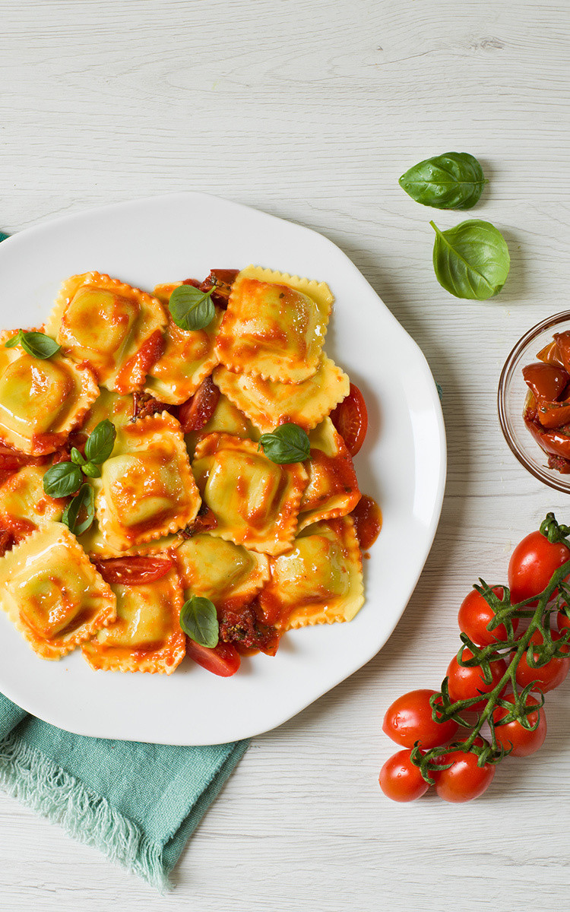

Ravioli

Description
Raviolis are square or round pillow shaped stuffed pastas, similar to dumplings. They have a filling that can consist of cheese, meat, and/or vegetables
Ravioli are formed by having one layer of flat pasta topped with filling and then placing another flat layer on top to form a pillow.
Ingredients
- For the dough:
- 2 cups all-purpose flour, plus more for dusting
- 3 large eggs
- 1 teaspoon olive oil
- ½ teaspoon kosher salt
- For the filling
- ½ cup whole milk ricotta cheese
- ¼ cup shredded mozzarella cheese
- etc, ykwim
Steps
Heres a brief overview of what you can expect when you make this easy ravioli from scratch:
- Make the dough: Make and knead the dough, then form it into a ball. Tightly wrap the ball and refrigerate for at least 30 minutes.
- Make the filling: Mix the filling ingredients together and set aside.
- Make the sauce Cook the garlic and pesto in oil, stir in the heavy cream, and bring to a boil. Reduce to a simmer, then whisk in the Parmesan.
- Assemble the ravioli: Roll out the dough into sheets. Drop cheese filling onto the dough about an inch apart.
Cover with the top sheet of pasta and make a seal around each portion of filling. Cut out individual ravioli, then seal the edges.
- Cook and bake the ravioli Boil the ravioli in salted water until the dumplings rise to the top and the filling is hot. Drain well.
- Serve the ravioli: Divide the ravioli between bowls, top with the warmed marinara sauce, then finish with the sauce.